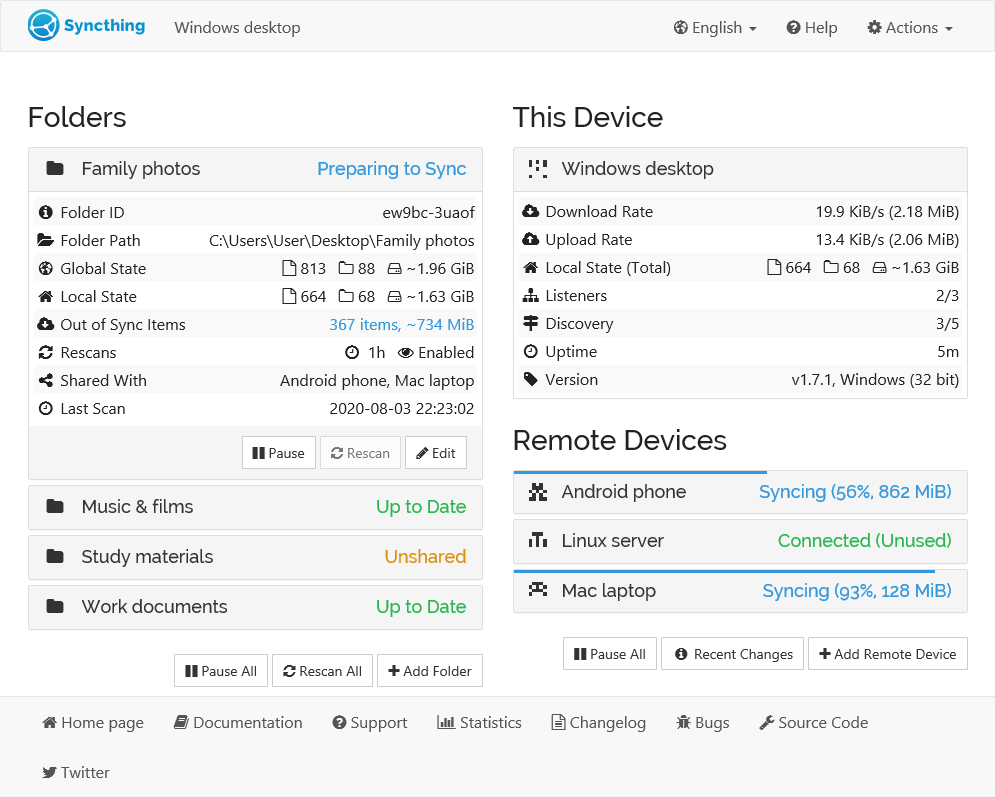
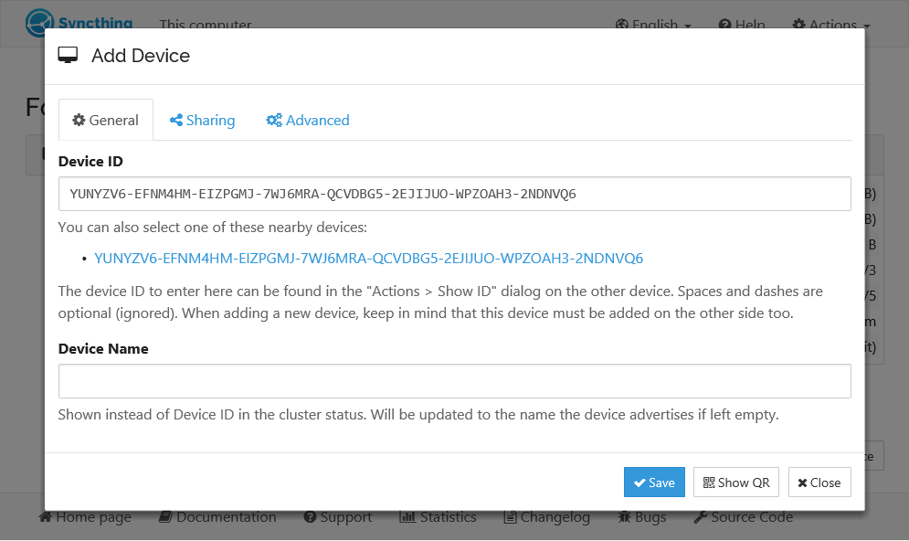
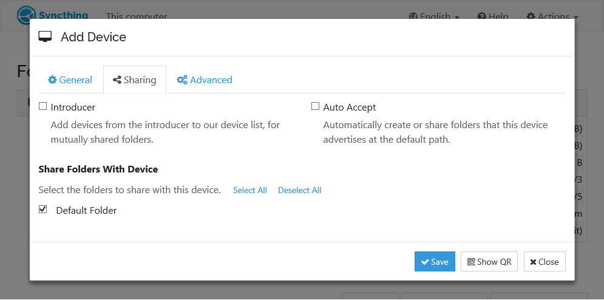

折腾了一周 Syncthing，我扔掉了坚果云和微云
从"这东西不就是网盘替代品吗"到"它完全是另一回事"，聊聊一个普通用户用 Syncthing 同步三台设备的真实体验：哪些地方爽到离谱，哪些地方让我差点卸载。
为什么我会装它
说实话最开始我是抱着"又一个网盘替代品"的心态点开它的。事情的起因很简单——坚果云的同步空间突然给我砍了一半，微云的免费额度早不够用了，Dropbox 在国内又连不上。我三台设备：主力笔记本、一台常年开着的旧台式机、还有一块 4TB 的移动硬盘插在路由器旁边。之前用坚果云同步笔记和代码，用微云传一些临时文件，但最近几个月体验真的越来越差。
然后就在论坛上刷到有人提 Syncthing，去它的官网扫了一眼，发现官网甚至都不把自己叫网盘，而是叫一个「连续文件同步器」。这个定位让我好奇了——不是网盘你拿它干嘛？
初印象：界面有点丑，但安装简单
从官方下载拿了安装包装完，第一次打开我愣了一下。界面是那种很朴素的 Web UI，左侧设备列表，中间文件夹状态，右上角加文件夹加设备的按钮。没有广告，没有引导弹窗，没有"您的云空间已使用 12%"这种让人焦虑的提示。就那么安安静静地摆在那里。

说实话第一眼印象是"有点简陋"。但转念一想——我要的是个同步工具，又不是个社区。简洁就简洁吧。
安装过程倒是出乎意料地顺。Windows 上跑安装包一路下一步，然后浏览器自动打开 localhost:8384。不用注册，不用邮箱验证，不用手机短信。这在今天的软件里简直像一股清流。
实际用下来的几个核心体验
文件夹同步：最让我惊喜的地方
我先试着同步了一个笔记文件夹。主力笔记本上建一个，旧台式机上加一个指向同样内容的同步文件夹，然后等。
嗯……就等。没有进度条，但能看到文件夹状态从"Syncing"变成"Up to Date"。回头看旧台式机，所有笔记都在那里了。
这时候我才开始明白它的设计逻辑：它不追求"云端中转"，也不追求"大文件秒传"。它就是两台设备之间点对点地传。我这两台机器在同一个局域网里，速度直接吃满了千兆网卡，比任何网盘的免费传输都快得多。出了局域网呢？只要能连上就行——它会自动打洞，打不通就走中继服务器，总比国内网盘那种限速不限量的套路实在。
.stignore 差点把我坑了一次
同步过两三天后我发现一个问题：每次同步都会多传一些临时文件——编辑器的备份文件、Python 的 __pycache__、浏览器缓存的东西。我知道 Syncthing 有忽略文件的功能，叫 .stignore，就去配置。
然后第一次写规则就翻车了。我写了一个 *2 想忽略所有以 2 结尾的文件，结果意外忽略了一个叫 plan2 的重要文档。再后来才搞明白，.stignore 的规则是首条匹配优先——从上往下读，第一条命中的决定命运，后面的全白写。我之前以为它会像 gitignore 那样"最后一条覆盖前面的"，完全搞反了。
后来乖乖去查了完整的语法，翻了好几页Syncthing文档才弄明白到底是怎么回事。普通文本、*（不跨目录）、**（跨目录）、? 单字符、{a,b} 备选、! 取反。还有个坑：! 取反规则必须写在宽规则之前，放在后面就是死代码。我把我的 .stignore 重写了一遍，把放行的目录写在最前面，然后用一条 * 把剩下的全忽略，瞬间干净了。

所以如果你也打算用 .stignore，我的建议是先别急着写复杂规则，先用最简单的试几条，看实时匹配提示对不对，再慢慢加。踩坑一次就记住了。
版本控制让我救回了一篇没保存的代码
上周改一个 Python 脚本改到一半手滑关掉了编辑器——没保存。按之前坚果云的同步机制，这一丢就是真丢了，因为它默认只同步最新版本。
但这次不一样。我想起之前给这个文件夹开了交错式版本控制（Staggered）。它的逻辑是：最近一小时内每 30 秒留一份快照，最近一天每小时一份，最近 30 天每天一份，30 天之外每周一份，一直保留到你设的最大年龄。
我打开 .stversions 目录，翻了五分钟，找到了两分钟前的快照。文件完整，一行没丢。说实话那一刻我真的有点感动——之前不知道文件版本控制能这么好用，感觉之前几年用网盘一直是裸奔状态。
配合这个我还在旧台式机上把几个备份文件夹设成了仅接收模式。意思是：主力笔记本上的增删改会流向旧台式机，但旧台式机上的任何修改（误删、误改、甚至勒索软件加密）都不会反传回主力设备。相当于把旧台式机变成了一个只会收东西的备份仓库。虽然严格来说这还是"同步"不是"备份"，但比之前坚果云那种双向同步靠谱多了——至少我不会因为在备份机上误删东西，把主力机上的也一起删掉。
.stfolder 标记丢失的小插曲
有天旧台式机上一个同步文件夹突然报错，日志里写 folder marker missing。
查了一下才明白：Syncthing 会在每个同步文件夹根目录创建一个叫 .stfolder 的空目录，作为"这个目录是一个有效的同步文件夹"的标记。我那台旧台式机之前跑过一次"清理垃圾文件"的脚本，把这个点开头的隐藏目录当成垃圾删掉了。
解决方法也很简单：在报错的文件夹里手动建一个叫 .stfolder 的空目录就行。Windows 资源管理器里新建文件夹时输入带点的名字直接敲回车就可以了——我之前一直以为 Windows 不允许文件名以点开头，其实只是默认不提示而已。
这之后我把 .stfolder、.stignore、.stversions 都加进了我自己清理脚本的白名单。算是 Syncthing 给我上的一堂课——它虽然是开源工具，但不是那种什么都不管的裸骨架，它有自己的一些"约定俗成的文件"，你别动它们就对了。

适合谁，不适合谁
说句实在话，Syncthing 不是给所有人准备的。
适合它的人：你有两三台以上的设备需要同步文件，讨厌各种网盘的限速和空间焦虑，愿意花半小时搞一下初始配置。尤其是如果你有一台常开的设备（旧电脑、NAS、树莓派什么的），把它当一个中枢节点用，体验会非常好。像我这种主力机 + 旧台式 + 移动硬盘的组合，装完之后真的再也没开过坚果云和微云。
不太适合的：你只需要在手机和电脑之间偶尔传个文件，不想碰任何配置、只想"装完就用"，或者你的设备之间网络不通（比如公司内网限制了点对点连接）。Syncthing 的去中心化设计决定了它需要你理解"设备"和"文件夹"的概念，而不是"我的云端"。这个认知切换对有些人来说可能有点费劲。
最后说句心里话
折腾了一周下来，我最大的感受是：Syncthing 让我第一次真正理解了"同步"和"备份"的区别——之前一直以为它们是一回事。它不会给你一个 100GB 的云端空间让你无脑堆文件，但它能让你的文件在自己的设备之间自由流动，而且这些设备里总有一台是你自己可控的。
这东西的官网看起来很朴素，社区也不热闹，但该有的功能一个不少，不该有的广告和套路一个没有。如果你也烦透了网盘公司的各种操作，不妨花一个晚上试一下——安装、配对两台设备、建一个同步文件夹，半小时就能走完第一轮流程。哪怕最后不长期用，也能搞清楚"点对点同步"到底是什么意思，这个认知本身就值了。
关于这套资料：GitHub 上有完整的文档仓库可以直接访问，国内网络的朋友可以用 Gitee 的镜像副本获取同样的内容，担心主仓库有朝一日访问不了的话，GitCode 那边也留了一份备份。三个仓库同步维护，想怎么拿都行。